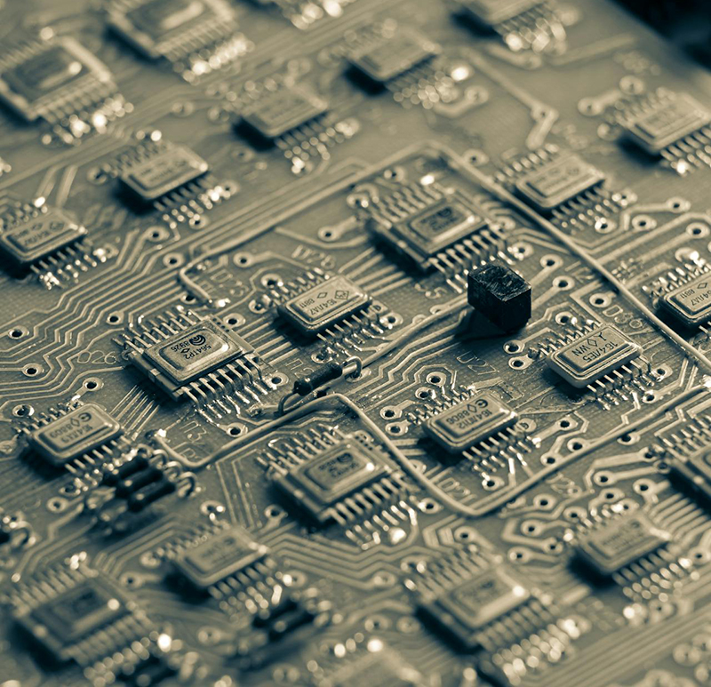
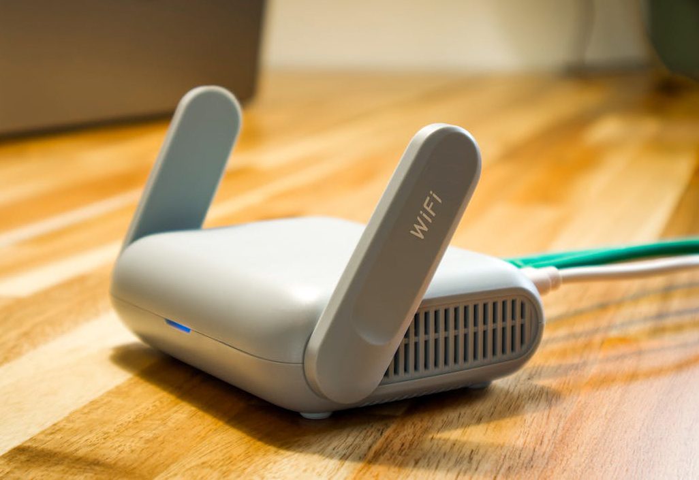
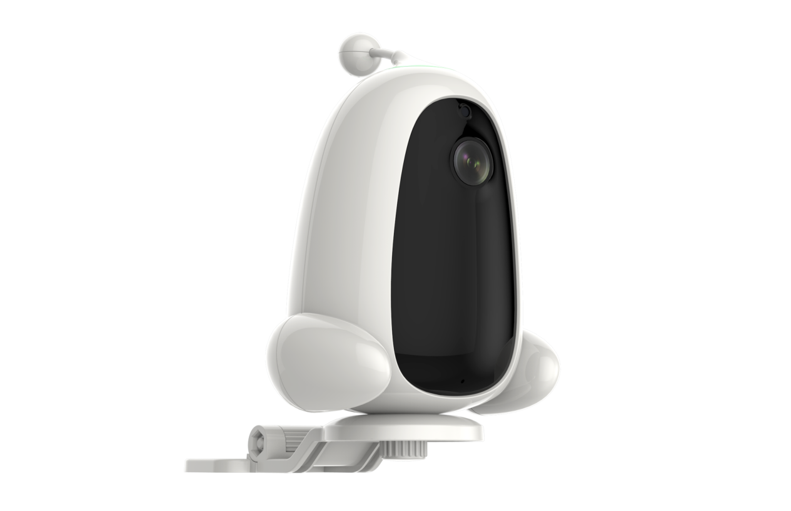
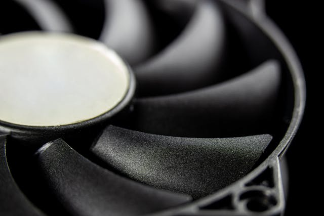

IoT devices combine electronics, connectivity, and mechanical design in increasingly compact products. This integration creates unique engineering challenges that can impact performance, reliability, and compliance.
Without proper design strategy, these challenges often lead to product instability, certification failure, and costly redesign cycles.
1. Complex System Integration
IoT devices integrate multiple subsystems, including sensors, communication modules, power management, and enclosure structures. Poor integration can lead to interference and unstable performance.

A structured approach like the hardware product development process helps manage these complexities.
2. EMC and Wireless Interference
Wireless communication modules introduce additional EMI risks. Interference between components can affect signal quality and compliance performance.

Understanding common EMI problems in PCB design is essential to reduce these risks.
3. Structural Constraints in Compact Designs
IoT devices are often compact, leaving limited space for shielding, grounding, and thermal management. This increases design difficulty.

These constraints are closely related to structural design risks in smart devices.
4. Power Management and Thermal Issues
Efficient power management is critical in IoT devices, especially for battery-powered products. Poor design can lead to overheating and reduced lifespan.

Balancing power efficiency and thermal performance is a key engineering challenge.
5. Compliance and Certification Complexity
IoT devices must meet multiple regulatory requirements, including EMC, safety, and wireless standards. Managing these requirements can be complex.

Proper planning is essential. Learn how to prepare in CE certification guide.
Conclusion
Engineering IoT devices requires balancing multiple constraints, including system integration, structural design, EMC performance, and compliance.
By addressing these challenges early, companies can reduce risks, improve product reliability, and accelerate time to market.